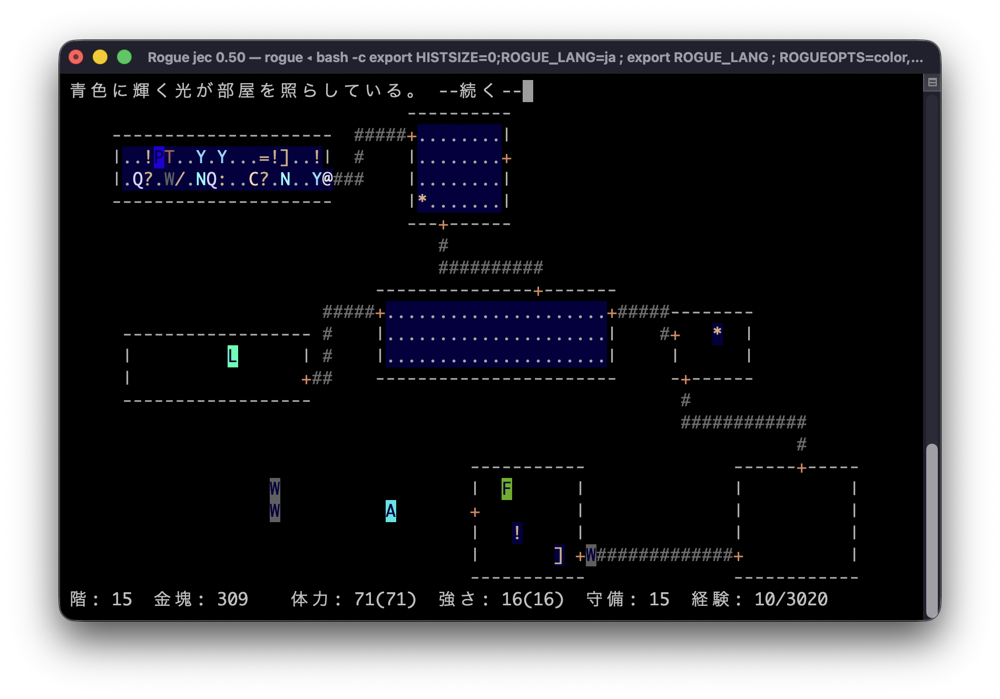

Rogue for macOS ダウンロード (2026年6月14日 / バージョン：5.4.5.jec.050)
動作確認：macOS Tahoe 26.5.1
（注：いわゆるコード署名はありませんので、初回の起動時にはそのままでは開けません。開こうとして警告が出た場合は、Appleが紹介している方法でシステム設定から許可を出して開いてください。2回目からは普通に起動できます）
Homebrewをお使いの方は以下のコマンドでCUI版をインストールすることも可能です。
| % % % | brew tap leopard-gecko/game brew trust leopard-gecko/game brew install jrogue --with-modern-settings |

はじめに。
ここはMac用Rogue（ローグ）の配布サイトです。
Rogueとは1980年に作られた最初期のRPGの一つで、一文字で表現されたキャラクターやプレイするたびにランダムに作られる迷宮などが特徴です。非常に古いものなのですがなんとも言えない独特の味があり、今遊んでも楽しめるものだと思います。
本来Rogueはターミナル上のプログラムとして動くので、ターミナルの使い方を知らないとやや敷居が高く感じてしまうかもしれません。そこで、MacでRogueをもっと気軽に遊べるようにするためにこのアプリを作りました。ターミナルにコマンドを入力しなくても普通のMacアプリのように開くことができ、そのまま冒険を始めることができます。
以前ここで配布していた「jRogue for macOS」は、Rogueのバージョン 5.4を日本語化・カラー化したものでした。その後に方針を大きく変更し、元の英語版も取り込んで日本語版と切り替え可能にしました。英語版も統合したことから名称をRogue for macOSに変更しています。さらに、Rogue 5.4だけでなく、Rogue Clone IIIも同じ起動画面から選べるようにしました。言うなれば、Rogueのバージョンや言語を選んで遊べるポータルアプリとして生まれ変わりました。
このアプリ（GUI版）の使い方に関してはGUI版の解説書を読んでください。
そして、ゲームを始める前にはローグにはお決まりの添付文書である【運命の洞窟】への案内書を読んでください。
アプリ（GUI版）について。
GUI版はアプリケーションの形を取っていますが、実際にはターミナルからRogue本体を起動するためのAppleScriptです。ターミナルを使ったことがない人でも、クリック操作だけでRogueを遊べる環境を目指しています。
アプリを開くと、Rogue 5.4とRogue Clone IIIのどちらで遊ぶかを選び、冒険を始めることができます。Rogueには豊富な設定機能があるのですが、おもなものはこのアプリから設定できます。設定は自動的に記録されるので、次回の起動からはリターンキーを押すだけでゲームを始めることができます。
起動画面の各項目やボタンの詳しい説明は、GUI版の解説書にまとめています。
Rogue 5.4とClone III。
このアプリでは、起動画面の「Version」から5.4またはClone IIIを選ぶことができます。
Rogueには少々ややこしい歴史があります。Rogueにはオリジナル系統とクローン系統の二つがあり、ここで選べる5.4とClone IIIはそれぞれの最終形とでもいうべきバージョンです。
オリジナル系統は元々のRogueの流れであり、当時公開されていた最終版は5.3ですが、それを復刻してソースコードが公開されたものが5.4です。ここで配布しているものは5.4に日本語の入出力機能を加え、カラー化したものです。
一方、当時はRogueのソースコードが公開されていなかったため、動作を再現するために作られたのがクローンの系統です。日本ではクローンのバージョン2が太田純氏によって日本語化されたものが有名であり、その派生である「データ分離版ローグ・クローンII」が普及しています。クローン系統の最終形はバージョン3（ここで「Clone III」と呼んでいるもの）であり、このアプリで採用したものです。こちらも5.4と同様に日本語の入出力機能とカラー機能を追加しました。
5.4は言うなればRogueの最終的な正統進化形であり、比較的機能が豊富です。Clone IIIは逆にシンプル指向で、サクサク遊べるのが特徴です。オリジナルと比べると暗い部屋が存在しなかったり、アイテムやオプションが違ったり各種アルゴリズムが異なるなどの違いがあります。外観上の大きな違いはゲームオーバー時の表示でしょう。オリジナル系統では墓標が、クローン系統ではガイコツが表示されます。
どちらにも魅力があり一方が正解とはとても言えないので、思い切って両者を統合してしまうことにしました。ローグのバージョン違いを一つにまとめるアプローチは世界初であろうと思います。基本的な遊び方はほぼ同じですが細かな違いが色々とありますので、【運命の洞窟】への案内書も両方のバージョンに対応しました。
スポイラー。
これらはあくまでスポイラー（ゲームのヒント）なので、正攻法で攻略したい人は読まないでください。
- 巻き物と水薬の一覧
Rogue 5.4 では、巻き物や水薬を使った後のメッセージや効果を見て、自分で呼び名をつけなければなりません。そこが少々面倒なところなので、一種のスポイラーとして巻き物と水薬の一覧表を作成しています。
Clone IIIでは呼び名をつける必要はないのですが、5.4とは内容が若干違うのでClone III版も用意しています。 - ウィザードモードのコマンド
ウィザードモードに入った時に追加されるコマンドの一覧です。5.4版とClone III版の両方を用意しています。
注：ウィザードモードは開発者の動作確認用の特殊なモードです。通常のGUI版では使えません。
その他もろもろ。
Rogueには走るコマンド（コントロールキーまたはシフトキーを押しながら移動）があります。ソースコードを見ると一コマずつプレーヤーが移動する様子が描写されるはずなのですが、今のPCでは処理が早すぎて一瞬で遥か彼方に行ってしまいます。他にも、ソースコードには物を投げたり魔法の杖で何かを発射したりするときには同様のアニメーション処理の記述があります。昔の端末では処理が遅かったため、走っている様子や物を投げる様子が肉眼でも見えたはずです。
そこで、ここで配布しているRogueではそういったアニメーション処理が見えるよう、必要な場面に短い遅延処理を加えています。単に現代風に便利にするだけでなく、当時の雰囲気に少しでも近づけるための変更です。
注意点。
日本語の表示と入力はMacの標準的な環境（UTF-8）を前提としています。文字コード関係の設定を変更している場合は、適切な表示や入力ができない可能性があります。
プレイヤー名や好きな果物の名前などには、日本語だけでなく絵文字を使うことも可能です。ただしターミナルに表示される絵文字は半角1文字分として扱われることがあり、続けて文字を入力すると表示が重なる場合があります。絵文字を使う場合は、後ろに半角スペースを一つ加えると安全です。
通常日本語は1文字で3バイト分のデータがありますが、特殊な漢字の一部は4バイトのものもあります。4バイトの漢字もゲーム中の入力は可能ですが、入力後にデリートキーで削除しようとすると表示が崩れることがあります。その場合は削除で直そうとせず、最初から入力し直してください。
このアプリにはコード署名がありません。そのため初回起動時には、macOSの警告が表示されることがあります。警告が出た場合は、Appleの説明に従ってシステム設定から許可してください。
外部リンク。
- The Rogue's Vade-Mecum（ローグのガイドブック）
要はこれもスポイラーです。ローグの内容についての詳細な解説の和訳。ほとんど完全なネタバレになりますので、ある程度やり込んだ方のみお読みください。
更新履歴。
2026/06/14 ver 5.4.5jec.050。アプリ名をRogueに変更。日本語・英語表示切替に対応。Clone IIIも選択できるようにした。カラー設定を一部変更。和訳を若干修正。起動画面を整理し、各種オプションを直接設定できるようにした。アプリにウィザードモードを追加（内容はブログに別記）。
途中経過（クリックで表示）
2026/05/28 ver 5.4.5J.044。GUI版を通常のアプリに近い操作性に変更。タイトル画像追加。ダークモード対応。添付文書の記載追加。CUI版でオプションありのインストールに再対応。
2026/05/20 ver 5.4.5J.043。macOS Tahoeに対応。アプリをユニバーサル化。内容には変更なし。
2025/04/12 「始めにお読みください.html」が開けない問題に対処。「ウィザードモードのコマンド」の記載を修正。
2019/10/11 ver 5.4.5J.042。macOS Catalinaに対応。デフォルトログインシェルの種類によらず動作できるようにした。
2018/03/19 ver 5.4.5J.041。和訳の修正。添付文書の修正。
2018/03/09 配布サイトをGitHubに移動。
2018/03/08 ver 5.4.5J.040。ごく細部の修正。
2017/12/13 ver 5.4.5J.039。jrogueを起動するスクリプトがbashのコマンド履歴に残らないようにした。その他細部の修正。
2017/12/08 ver 5.4.5J.038。セーブファイルから再開した時の動作を修正。ソースコードを5.4.5ベースに再度変更(コロコロ変わってすみません・・・)。その他細部の修正。
2017/12/08 ver 5.4.4J.037。セーブファイルから再開した時の誤作動を修正。ソースコードを5.4.4ベースに再変更。その他細部の修正。
2017/12/06 ver 5.4.5J.036。和訳や動作の細かな修正。添付文書を全面的に和訳し直した。
2017/11/30 ver 5.4.5J.035。和訳の修正。添付文書の修正。GUI版で選べるカラー設定にPC-8801/9801風を追加。
2017/11/22 ver 5.4.5J.034。和訳の修正。
2017/11/17 ver 5.4.5J.033。和訳を全面的に見直して元の英語をほぼそのまま訳すスタイルに変更。カラー設定を新規に作り直し。
2017/11/07 ver 5.4.5J.032。セーブファイルから再開した時に巻物の出現率がおかしくなる問題を修正。
2017/11/03 ver 5.4.5J.031。GUI版のインターフェース変更。上級モードを廃止。
2017/11/01 ver 5.4.5J.030。和訳の修正。
2017/10/31 ver 5.4.5J.029。GUI版にスコア表示と墓標表示の機能追加。CUI版のインストール時にウィザードモードありのオプション追加。和訳と不具合の修正。
2017/10/25 ver 5.4.5J.027。GUI版で背景色の設定追加。ゲームが終わるとターミナルで開いているウインドウがjRogueだけの時はターミナルを終了し、他のウインドウが開いている時はjRogueのウインドウを閉じる仕様にした。CUI版のインストール時に背景色変更とカーソル表示の有無を選べるオプションを追加。
2017/10/24 ver 5.4.5J.025。GUI版に好きな果物の設定追加。インストール方法を明示。CUI版では環境変数ROGUEOPTSでプレイヤー名や果物に日本語や絵文字なども使用可能。各種不具合修正。
2017/10/20 ver 5.4.5J.024。GUI版でも細かい設定を行えるようにした。
2017/10/19 ver 5.4.5J.023。ゲーム終了後にもう一度遊ぶか選べるようにした。
2017/08/31 ver 5.4.5J.022。添付文書の修正。和訳の修正。デフォルトのセーブファイル名をjrogue.saveに変更。
2017/08/30 ver 5.4.5J.021。GUI版の表示修正。ターミナル起動時に二つのウインドウが開いてしまう不具合の修正。和訳の修正。
2017/08/29 ver 5.4.5J.020。GUI版でターミナルのフォントをMonacoに変更し背景を黒にする動作を追加。Wizardモード（開発者の動作確認用モード。一般ユーザーには無関係）を和訳。
2017/08/25 ver 5.4.5J.019。ゲームオーバー及びクリア時のカラー表示追加。その他細部の修正。
2017/08/24 ver 5.4.5J.018。細かな表記の修正。「始めにお読みください」の内容修正。
2017/01/19 ver 5.4.5J.017。和訳の修正。更新状況を反映させるためアプリのバージョンを細かい表記に変更。
2017/01/16 添付文書の細かな修正。
2016/12/21 起動時にターミナルのフォントサイズが小さい場合は大きくする処理を追加。（フォントサイズが13以上に設定されている場合は変更しない）
2016/12/19 和訳部分などの細かな修正。
2016/12/14 添付文書の修正。Applescriptの修正。
2016/12/12 いくつかの状況で反転表示が行われていなかった問題を修正。添付文書の内容を大幅に見直し。
2016/12/11 バグ修正。GUI版は初回起動時にユーザー名（アカウント名ではなくフルネームの方）を取得して表示するようにした。
2016/12/10 アプリ名をjRogueに変更。起動時に選択したモードを記録し、次回起動時にはボタンのデフォルト表示を変更するようにした（GUI版）。和訳の修正。CUI版はHomebrew経由のインストールに変更。
2016/12/08 オプションコマンドでカラー設定を変更した後にステータスが文字化けする問題を修正。
2016/12/07 ソースコードのベースを5.4.4から5.4p(5.4.5)に変更。
2016/12/06 Rogue 5.4.5J 公開開始。
連絡先。
- x@leopard_gecko
- leopardgeckoのブログ
ご感想・ご要望・不具合のご連絡など、お気軽にどうぞ。